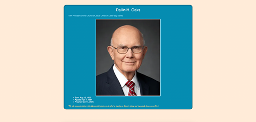
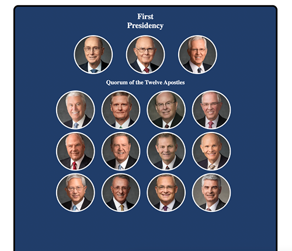
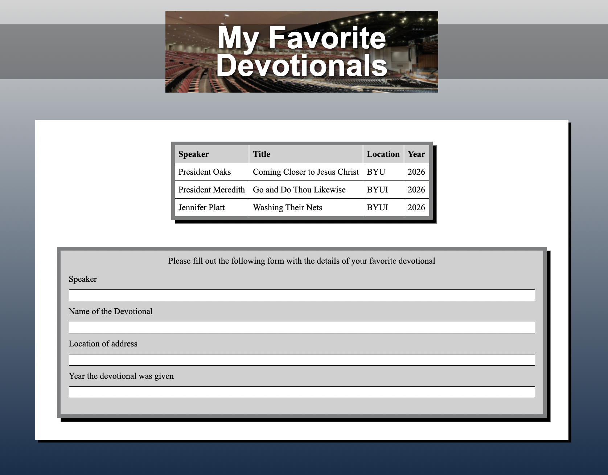
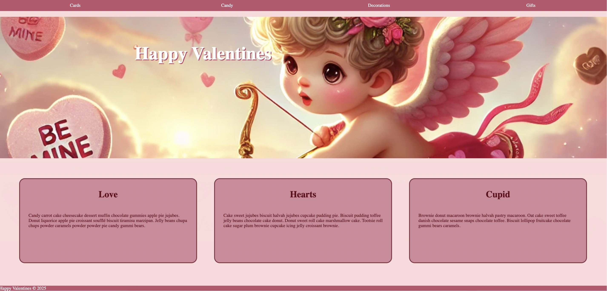
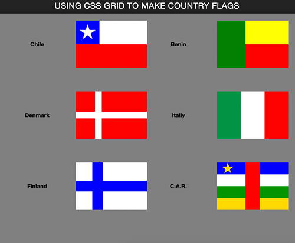
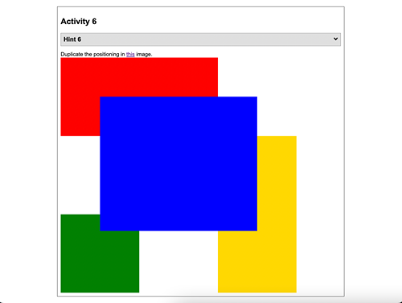
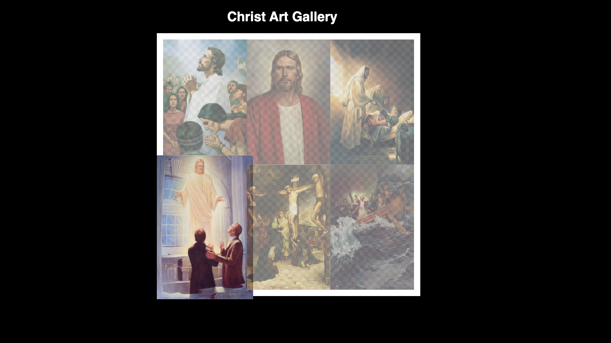
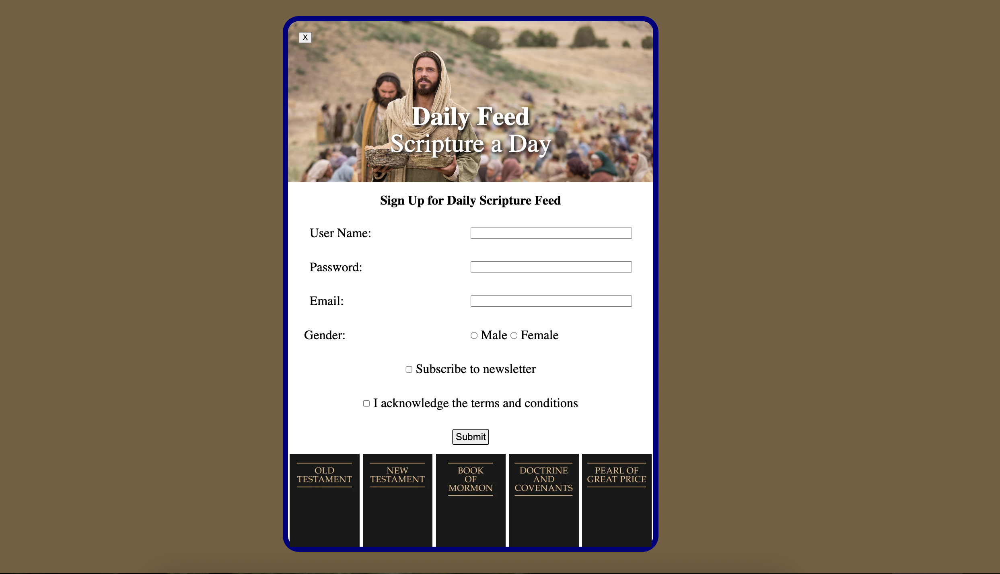

The purpose of this ICE challenge was to practice basic html and css and follow a simple wireframe. In this assignment I learned more about what can be done with designing text, specifically bullet points and cursive.

The purpose of this ICE challenge was to practice html and css and follow a design. From this challenge I learned more about how to use grids, and got some good practice with implementing them to follow a specific design.

The purpose of this ICE challenge was to practice making forms and tables in html and CSS to display and prepare to collect data. In this challenge I learned more about how to create a design that compliments a piece I've already been given.

The purpose of this ICE challenge was to practice designing css without changing the html. In this challenge I had a lot of issues with the hero. It taught me how to use object-fit and how to manually place things using transform:translate

The purpose of this ICE challenge was to practice using css grid alignment properities in different layouts. In this challenge I learned how to change the layout and look of the page based on the browser window width.

The purpose of this ICE challenge was to practice using css grid alignment properities in different layouts. In this challenge I learned how to use floats to position things.

The purpose of this ICE challenge was to learn how to resize images, making them easier to work with later. I learned that its fairly easy to manipulate the size of pictures. Its a technique I may use more

The purpose of this ICE challenge was to practice more css and to look at javascript. It was interesting to look at the javascript and how it interacted with the things I had coded. It gave me a better understanding on how it works and how I will write it in the future.